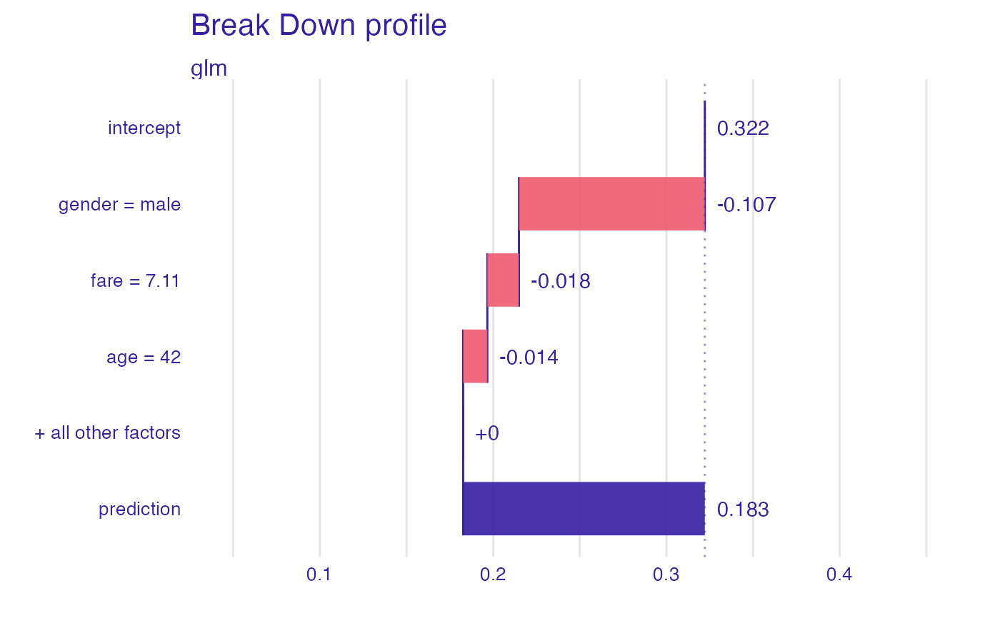
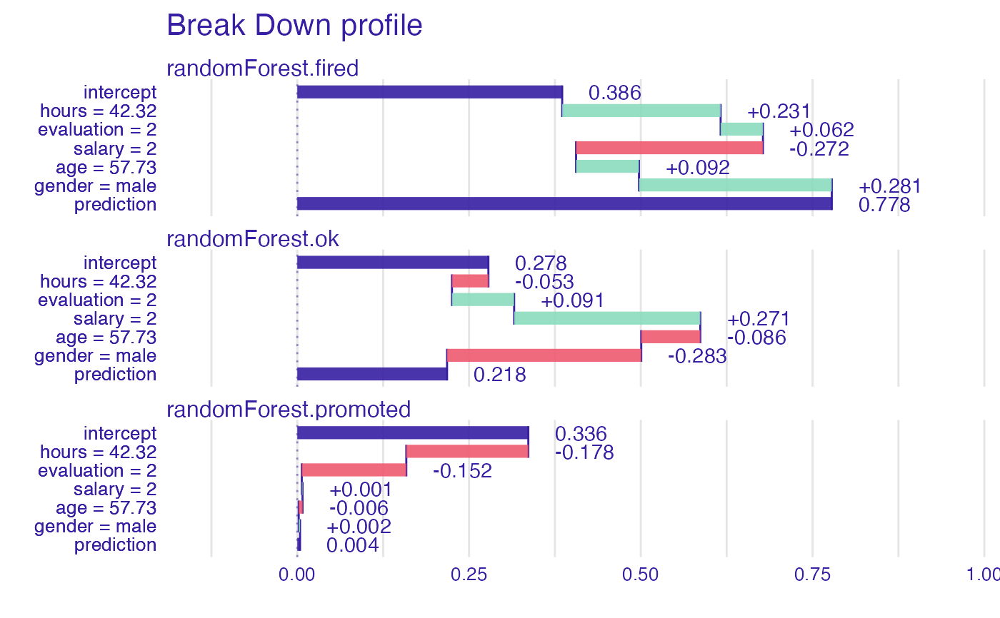
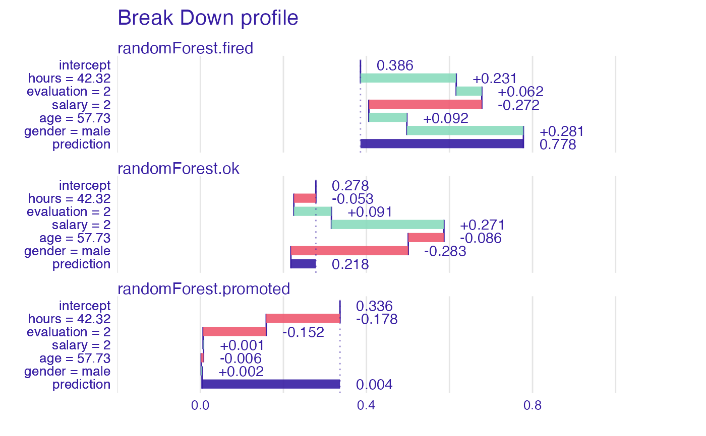
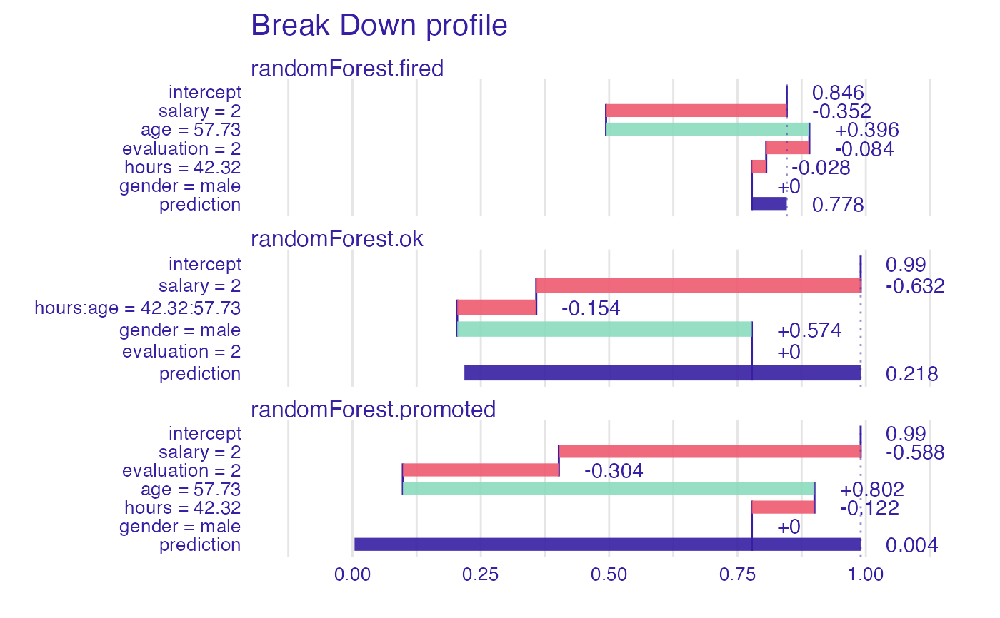
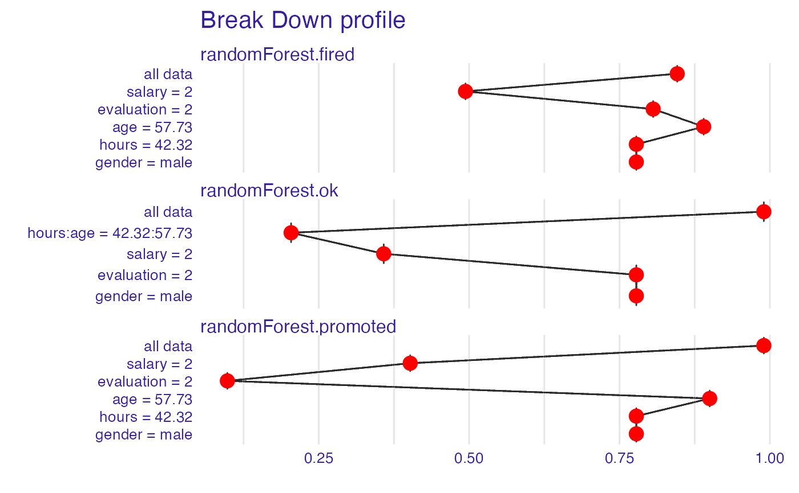
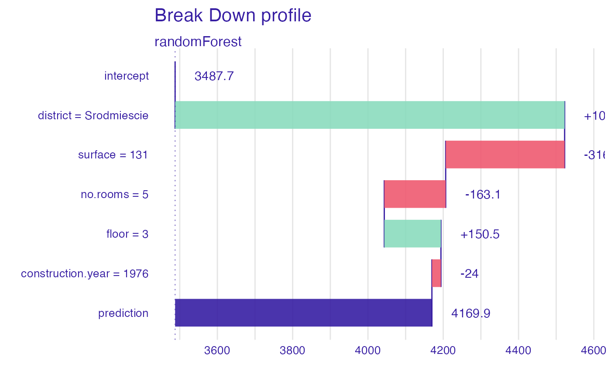

Displays a waterfall break down plot for objects of break_down class.
# S3 method for break_down plot( x, ..., baseline = NA, max_features = 10, min_max = NA, vcolors = DALEX::colors_breakdown_drwhy(), digits = 3, rounding_function = round, add_contributions = TRUE, shift_contributions = 0.05, plot_distributions = FALSE, vnames = NULL, title = "Break Down profile", subtitle = "", max_vars = NULL )
Arguments
| x | an explanation created with |
|---|---|
| ... | other parameters. |
| baseline | if numeric then veritical line starts in |
| max_features | maximal number of features to be included in the plot. default value is |
| min_max | a range of OX axis. By default |
| vcolors | If |
| digits | number of decimal places ( |
| rounding_function | a function to be used for rounding numbers.
This should be |
| add_contributions | if |
| shift_contributions | number describing how much labels should be shifted to the right, as a fraction of range. By default equal to |
| plot_distributions | if |
| vnames | a character vector, if specified then will be used as labels on OY axis. By default NULL |
| title | a character. Plot title. By default |
| subtitle | a character. Plot subtitle. By default |
| max_vars | alias for the |
Value
a ggplot2 object.
References
Explanatory Model Analysis. Explore, Explain and Examine Predictive Models. https://pbiecek.github.io/ema
Examples
library("DALEX") library("iBreakDown") set.seed(1313) model_titanic_glm <- glm(survived ~ gender + age + fare, data = titanic_imputed, family = "binomial") explain_titanic_glm <- explain(model_titanic_glm, data = titanic_imputed, y = titanic_imputed$survived, label = "glm")#> Preparation of a new explainer is initiated #> -> model label : glm #> -> data : 2207 rows 8 cols #> -> target variable : 2207 values #> -> predict function : yhat.glm will be used ( default ) #> -> predicted values : numerical, min = 0.1490412 , mean = 0.3221568 , max = 0.9878987 #> -> model_info : package stats , ver. 4.0.2 , task classification ( default ) #> -> residual function : difference between y and yhat ( default ) #> -> residuals : numerical, min = -0.8898433 , mean = 4.198546e-13 , max = 0.8448637 #> A new explainer has been created!#> contribution #> glm: intercept 0.322 #> glm: gender = male -0.107 #> glm: fare = 7.11 -0.018 #> glm: age = 42 -0.014 #> glm: class = 3rd 0.000 #> glm: embarked = Southampton 0.000 #> glm: sibsp = 0 0.000 #> glm: parch = 0 0.000 #> glm: survived = 0 0.000 #> glm: prediction 0.183plot(bd_glm, max_features = 3, vnames = c("average","+ male","+ young","+ cheap ticket", "+ other factors", "final"))# \dontrun{ ## Not run: library("randomForest") set.seed(1313) # example with interaction # classification for HR data model <- randomForest(status ~ . , data = HR) new_observation <- HR_test[1,] explainer_rf <- explain(model, data = HR[1:1000,1:5])#> Preparation of a new explainer is initiated #> -> model label : randomForest ( default ) #> -> data : 1000 rows 5 cols #> -> target variable : not specified! ( WARNING ) #> -> predict function : yhat.randomForest will be used ( default ) #> -> predicted values : predict function returns multiple columns: 3 ( WARNING ) some of functionalities may not work #> -> model_info : package randomForest , ver. 4.6.14 , task multiclass ( default ) #> -> residual function : difference between 1 and probability of true class ( default ) #> A new explainer has been created!#> contribution #> randomForest.fired: intercept 0.386 #> randomForest.fired: hours = 42.32 0.231 #> randomForest.fired: evaluation = 2 0.062 #> randomForest.fired: salary = 2 -0.272 #> randomForest.fired: age = 57.73 0.092 #> randomForest.fired: gender = male 0.281 #> randomForest.fired: prediction 0.778 #> randomForest.ok: intercept 0.278 #> randomForest.ok: hours = 42.32 -0.053 #> randomForest.ok: evaluation = 2 0.091 #> randomForest.ok: salary = 2 0.271 #> randomForest.ok: age = 57.73 -0.086 #> randomForest.ok: gender = male -0.283 #> randomForest.ok: prediction 0.218 #> randomForest.promoted: intercept 0.336 #> randomForest.promoted: hours = 42.32 -0.178 #> randomForest.promoted: evaluation = 2 -0.152 #> randomForest.promoted: salary = 2 0.001 #> randomForest.promoted: age = 57.73 -0.006 #> randomForest.promoted: gender = male 0.002 #> randomForest.promoted: prediction 0.004plot(bd_rf)#> contribution #> randomForest.fired: intercept 0.386 #> randomForest.fired: hours = 42.32 0.231 #> randomForest.fired: evaluation = 2 0.062 #> randomForest.fired: salary = 2 -0.272 #> randomForest.fired: age = 57.73 0.092 #> randomForest.fired: gender = male 0.281 #> randomForest.fired: prediction 0.778 #> randomForest.ok: intercept 0.278 #> randomForest.ok: hours = 42.32 -0.053 #> randomForest.ok: evaluation = 2 0.091 #> randomForest.ok: salary = 2 0.271 #> randomForest.ok: age = 57.73 -0.086 #> randomForest.ok: gender = male -0.283 #> randomForest.ok: prediction 0.218 #> randomForest.promoted: intercept 0.336 #> randomForest.promoted: hours = 42.32 -0.178 #> randomForest.promoted: evaluation = 2 -0.152 #> randomForest.promoted: salary = 2 0.001 #> randomForest.promoted: age = 57.73 -0.006 #> randomForest.promoted: gender = male 0.002 #> randomForest.promoted: prediction 0.004#> Warning: `fun.y` is deprecated. Use `fun` instead.#> contribution #> randomForest.fired: intercept 0.846 #> randomForest.fired: salary = 2 -0.352 #> randomForest.fired: age = 57.73 0.396 #> randomForest.fired: evaluation = 2 -0.084 #> randomForest.fired: hours = 42.32 -0.028 #> randomForest.fired: gender = male 0.000 #> randomForest.fired: prediction 0.778 #> randomForest.ok: intercept 0.990 #> randomForest.ok: salary = 2 -0.632 #> randomForest.ok: hours:age = 42.32:57.73 -0.154 #> randomForest.ok: gender = male 0.574 #> randomForest.ok: evaluation = 2 0.000 #> randomForest.ok: prediction 0.218 #> randomForest.promoted: intercept 0.990 #> randomForest.promoted: salary = 2 -0.588 #> randomForest.promoted: evaluation = 2 -0.304 #> randomForest.promoted: age = 57.73 0.802 #> randomForest.promoted: hours = 42.32 -0.122 #> randomForest.promoted: gender = male 0.000 #> randomForest.promoted: prediction 0.004plot(bd_rf)#> Warning: `fun.y` is deprecated. Use `fun` instead.# example for regression - apartment prices # here we do not have intreactions model <- randomForest(m2.price ~ . , data = apartments) explainer_rf <- explain(model, data = apartments_test[1:1000,2:6], y = apartments_test$m2.price[1:1000])#> Preparation of a new explainer is initiated #> -> model label : randomForest ( default ) #> -> data : 1000 rows 5 cols #> -> target variable : 1000 values #> -> predict function : yhat.randomForest will be used ( default ) #> -> predicted values : numerical, min = 2043.066 , mean = 3487.722 , max = 5773.976 #> -> model_info : package randomForest , ver. 4.6.14 , task regression ( default ) #> -> residual function : difference between y and yhat ( default ) #> -> residuals : numerical, min = -630.6766 , mean = 1.057813 , max = 1256.239 #> A new explainer has been created!#> contribution #> randomForest: intercept 3487.722 #> randomForest: district = Srodmiescie 1034.737 #> randomForest: surface = 131 -315.991 #> randomForest: no.rooms = 5 -163.113 #> randomForest: floor = 3 150.529 #> randomForest: construction.year = 1976 -24.021 #> randomForest: prediction 4169.863bd_rf <- local_attributions(explainer_rf, apartments_test[1,], keep_distributions = TRUE) plot(bd_rf, plot_distributions = TRUE)#> Warning: `fun.y` is deprecated. Use `fun` instead.bd_rf <- local_interactions(explainer_rf, new_observation = apartments_test[1,], keep_distributions = TRUE) bd_rf#> contribution #> randomForest: intercept 3487.722 #> randomForest: district = Srodmiescie 1034.737 #> randomForest: surface = 131 -315.991 #> randomForest: no.rooms = 5 -163.113 #> randomForest: floor = 3 150.529 #> randomForest: construction.year = 1976 -24.021 #> randomForest: prediction 4169.863plot(bd_rf)#> Warning: `fun.y` is deprecated. Use `fun` instead.# }